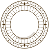

The day and night cycle
Every shared scene of Classic’s cycle, plus banners and pace. Each frame is the TV at full design size, scaled down.
ProposalNight falls

Close your eyes. Keep your screen to yourself.
 Viktor
Viktor Ilka
Ilka Mara
Mara Tomi
Tomi Bram
Bram Zsófi
Zsófi Dani
Dani Kata
KataThe moon rises behind the dimmed table (not a void). Same title, now with the table silvering under it.
No protection holds
Tonight nothing can stay Death’s hand.
After deathless nights the Blood Moon rises: no protection holds tonight. The moon bleeds and the rim stays oxblood all night.
Two did not wake
TomiRegularZsófiGuardianThe dead as 210 px portraits with their revealed roles, struck once the stamp lands. Then the arch to the Gazette front page (TV7).
Everyone woke
ViktorIlkaMaraTomiBramZsófiDaniKataThe Guardian’s shield is said to have held.
A quiet night still gets its moment: the whole table, every seat lit, then the shorter front page.
ViktorIlkaMaraTomiBramZsófiDaniKataThe vote (and the final act, the stand, the haunting) opens with the arch passing over the table, carrying the title. Today it is a title in a void.
The coin decides
Tomi
TomiIlkaThe game’s own gold coin (COIN_FACE: milled rim, beads, rays) with a tied player’s name on each face, between their two portraits; it tosses (coinToss), and the held breath comes before it lands.
Tomi is spared
Tomi3 to hang, 4 to spare. The town hangs no one today.
The spared player at 2× with a gilt rim (not red). The scene kit of board 5 covers the hanged case.
Mara dies of a broken heart
MaraBramLinked deaths show the cause between the two portraits: the Lovers’ heart, the Vigilante’s shot, Equal Exchange.
Bram returns
BramBack from the grave until the next dawn.
A temporary return (until the next dawn): the portrait rises from grey to colour; the seat is un-struck until then.
Two days remain
The game’s own Doomsday dial (the astrolabe face with the days in roman numerals) at 470 px: past days struck in blood, today lit, the last day burning red. The hand drags forward one day with ghost trails and a heavy toll; the screen bleeds at the edges. On the final day everything goes red.
 Ilka swapped masks with Bram. Real, or pretend?
Ilka swapped masks with Bram. Real, or pretend? Mara accuses Tomi · 2 accusations
Mara accuses Tomi · 2 accusations The Undertaker’s sign: “popcorn”, 2
The Undertaker’s sign: “popcorn”, 2 Viktor calls a dig of 4
Viktor calls a dig of 4Turn-level news (swap, claim, sign, dig called, accusation) is a ribbon across the band only: gilt for public, oxblood for bad, ink for night. It never covers the stage.
The same, at 0.6×
Every interlude has a long and a brisk form; nothing is cut, only shortened.
Brisk plays Full scenes at 0.6× and drops banners to inline (paceScale). The host’s phone can tap through any scene after 2 s.